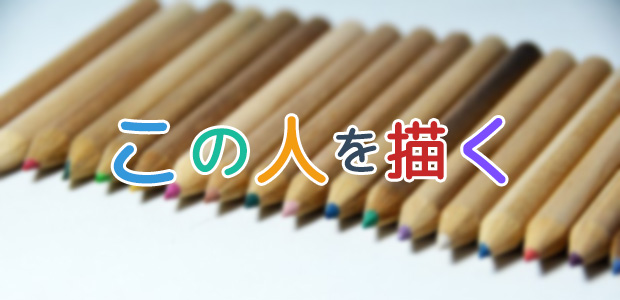
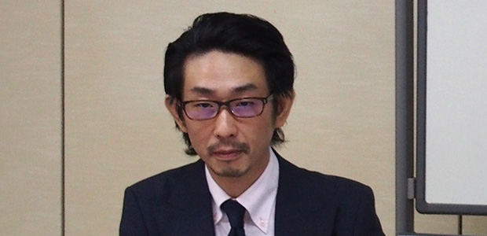
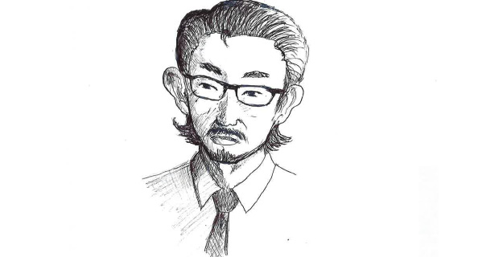
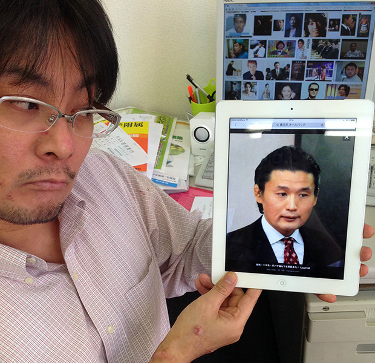

誰しも、自分が日々接する人──例えば家族、または学校や職場の仲間など──の中に、愛すべき味のある人物がいるのではないでしょうか？
このシリーズでは、私にとってそのような人物を、私というフィルターを通して描き、なおかつ今度は視点を切り替えて客観的に再認識していくというコーナーです。
ただし、読んで下さっている皆さんにはわからない場合もありますので、その人と似ている有名人の写真も添えて解説していきたいと思います。
庄本廉太郎を描く
我が研究所の若手ホープ、庄本廉太郎を見ていると非常に面白い。
基本的にクールで理知的、そしてオシャレなイメージのある彼。
しかし長く接しているとカワイイ一面も多々あり、なにかとネタにしたくなるのです。
例えば、時々彼は髪型を大きく変えてくるのですが、その中でも‘オールバック’にしてくるときは、かなりインパクトがあります。

かなり貫禄がありますよね（笑）。
そこで私なんかはふざけて「経済担当のインテリや○ざ」などと表現して彼をいじっているわけです。
本人はあまり嬉しそうにはしませんが…。
それはさておき、私なりに改めて庄本氏を自分なりに表現しようと思い立ちまして、描いてみたのがこれです。

このイラスト自体は５分ぐらいで描きあげたのですが、実は最初に描いたのがあまりにもバランスが悪かったので、描き直して３回目の作品です。
それだけ普段一緒にいながら彼の特徴を細かくは把握していなかったのだとわかりました。
庄本氏を庄本氏たらしめている要素はなんだろう？
改めてそんなことを考えてみると、今まで意識していなかった事実がいろいろ出てきます。
「耳、大きくてイイ形しているんだな」
「眉毛は思っていたより太い」
「しっかりとした広いオデコ」
「退院した直後に比べて色ツヤがよい」
など、こんな機会でもなければ気づかなかったことが多かったことに驚きです。
今のこの彼に類似している人はいるだろうか？
有名人、できれば歴史上の人物の中で見つけたい。
そして二人の人物面での共通点を探してみたい。
そんな衝動に駆られてネット検索してみたのですが、なかなか似ている人がいない…（昔の中国の皇帝などでいそうなのに）。
そしてやっと、「おお！これかも」と見つかったのは、意外なお方でした。

相撲の一時代を築いた、あのお方です。
私は特にファンだったというわけではないのですが、自らの果たすべき役目を自覚し、ストイックに自らの仕事を成し遂げる姿、自分の専門にプライドを持ち常に精進し続ける姿は、確かにうちの庄本氏とかぶるではないか！
ということで、気が向いたらまた誰か描きます。チャンチャン！